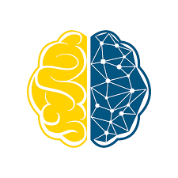
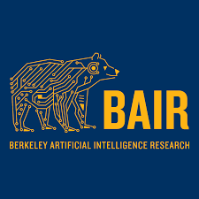

P r o j e c t s

Thermal Classification
- Automated an ML pipeline for the ESGDA thermal team using python and Jenkins for RNN models that achieved under 0.5 degrees RMSE.
- Developed a solution for automatically starting and stopping modles to save CPU cycles through multivariable optimization.
- Performed feature engineering and trained XGBoost Trees and Neural Networks to classify 5G devices with 0.75 F1 score.

Audio Deepfake Detector
- Project Leader for Industry Consulting Project with FakeNetAI on deepfake audio detection.
- Devised new ResNet-LSTM models to classify audio segments from multiple datasets with an average of 0.9 F1 score for FakeNetAI’s audio deepfake detector.
- Deployed model on to a web server with AWS and streamlit backend.

Self-Supervised Pretraining
- Analyzed representational similarity divergence of various vision models in hierarchical pretraining strategies under Prof. Kurt Kuetzer.
- Published Self-Supervised Pretraining Improves Self-Supervised Pretraining to the WACV 2022 conference.